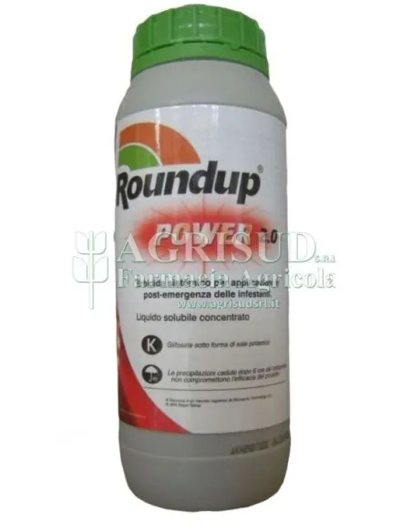
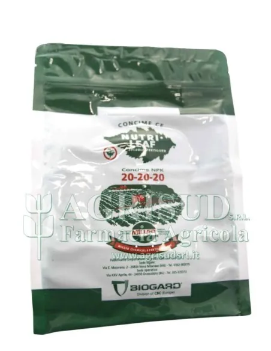
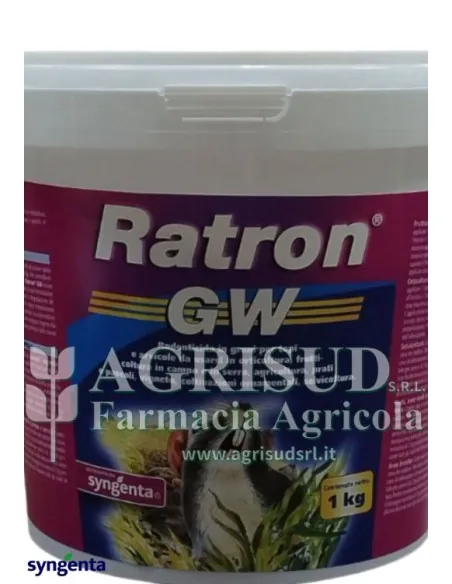
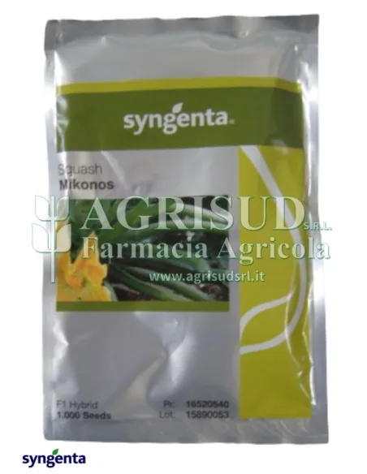

Farmacia Agricola a Foggia · dal 1967
Difesa, nutrizione e semi, con il consiglio di un agronomo.
Fitofarmaci, confusione sessuale, fertilizzanti, giardino e disinfestazione. Spedizione gratuita da 99 €.
- Carta, PayPal anche in 3 rate, bonifico
- Ritiro in magazzino

Biogard · confusione sessuale
Isomate OFM Rosso Flex, 200 diffusori
Contro tignola orientale del pesco e tignola delle susine. Una sola applicazione per tutto il volo.
68,50 €IVA incl.Vedi il prodotto
Reparti
Cosa ti serve?
Tutti i reparti del negozio
Disponibili ora
Prodotti in evidenza

BIOGARD ISOMATE A/OFM da 200 diffusori – G. molesta / funebrana, Anarsia
74,50 €
SYNGENTA AFFIRM KG. 1
38,00 €
BAYER ROUNDUP POWER 2.0 LT. 1
12,00 €
SYNGENTA ELATUS ERA LT. 5
330,00 €
BIOGARD NUTRI LEAF 20.20.20 LB. 5
22,00 €
COMPO GOLD O NPK 15-9-15 KG. 10
27,00 €
SYNGENTA RATRON GW KG. 1
25,00 €
SYNGENTA ZUCCHINO HY MIKONOS 1.000 SEMI
195,75 €Sotto la soglia il costo è calcolato nel carrello in base a peso e volume.
Lavorative dal pagamento, con corriere espresso e email di tracciamento.
Consigli tecnici gratuiti su WhatsApp al 351 101 9951.
La valutazione dei clienti mostrata nel badge Trusted Shops del negozio.
Chi siamo
L’idea era semplice: aiutare il cliente non solo a comprare il prodotto giusto, ma anche a usarlo bene. Oggi l’azienda è guidata dall’agronomo dott. Lucio Sebastio.
La nostra storiaAgronomo in tasca
Un dubbio su dosi, colture o tempi?
Scrivi su WhatsApp: rispondiamo con consigli tecnici gratuiti.